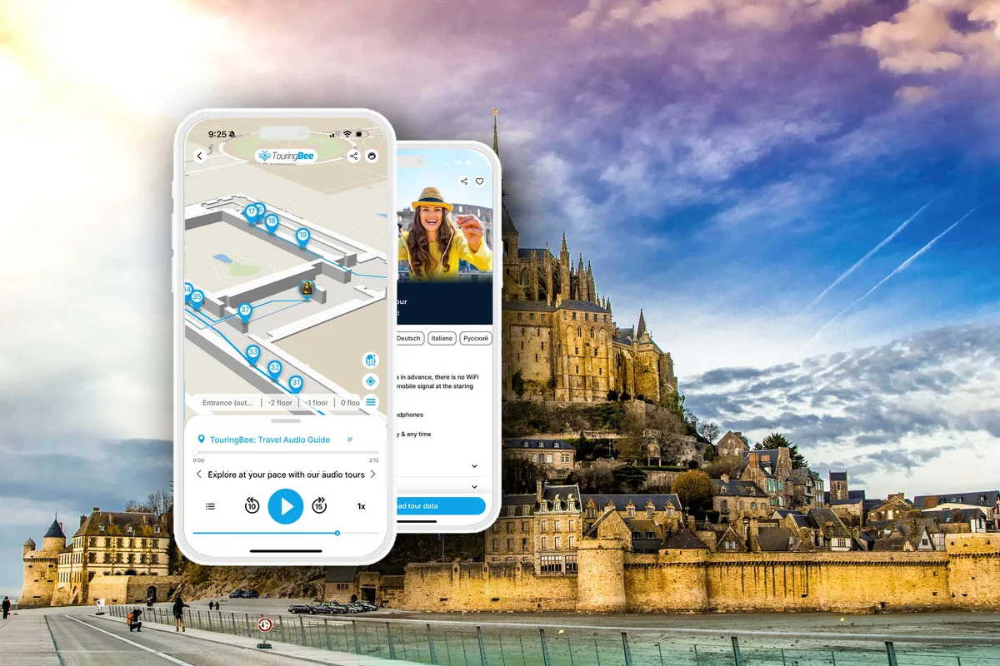

Der TouringBee-Audioguide ist ein Rundgang auf eigene Faust über den Mont-Saint-Michel auf Ihrem Handy: eine Offline-Karte der Insel und eine Geschichte an jedem Halt, die Sie selbst starten, wenn Sie dort sind. Sie gehen in Ihrem Tempo, ohne Gruppe und ohne feste Startzeit. Das Abtei-Ticket ist separat: Der Guide führt durch das Dorf und über die Wehrmauern auf dem Weg zur Abtei, nicht durch das Innere der Abtei.

Insel-Audioguide Mont-Saint-Michel
- 17 Stationen, eine Route von etwa 2 Stunden Gehzeit
- Offline-GPS-Karte — auf der Insel keine mobilen Daten nötig
- 8 Sprachen · iOS und Android
- Eine Zahlung, ein Jahr Zugriff, kein Abo
Ab €9,99 · Eintritt in die Abtei nicht enthalten
Audioguide holen — ab €9,99★ 4,6 im App Store · 7.277 Reisende
Was der Guide erzählt
Die Route beginnt am Stadttor und steigt die Insel so hinauf, wie sie dafür gebaut wurde: die Grande Rue hinauf, vorbei an der Pfarrkirche Saint-Pierre, zur Terrasse am Fuß der Abtei, dann über die Wehrmauern mit den weitesten Blicken über die Bucht wieder hinunter. Unterwegs erklären die Geschichten, was Sie sehen und warum es dort steht:
- Bischof Aubert, der Erzengel Michael und die Gründung des Heiligtums im Jahr 708.
- Wie mittelalterliche Baumeister eine Abtei und La Merveille auf einem Granitfelsen inmitten von Treibsand und reißenden Gezeiten errichteten.
- Die Pilger, die die Bucht zu Fuß durchquerten, und die Gefahren, denen sie begegneten.
- Die Festung, die den ganzen Hundertjährigen Krieg standhielt.
- Die Jahrzehnte, in denen der heilige Berg ein Gefängnis war.
- Die Gezeiten — und wie die Bucht funktioniert.
Die Geschichten sind von lokalen Historikern und erfahrenen Guides geschrieben, und Sie starten jede selbst vor Ort — nichts spielt automatisch, Sie können also stehen bleiben, schauen und weitergehen, wann Sie wollen. Wie die Insel aufgebaut ist, zeigt unsere Karte mit Rundweg.
So funktioniert's
- Guide kaufen. Eine Zahlung, sofortiger Zugriff, kein Abo.
- Zu Hause herunterladen. Installieren Sie die TouringBee-App auf iOS oder Android und laden Sie die Tour vor der Reise per WLAN herunter.
- Karte am Tor öffnen. GPS zeigt Ihren Standort auf der Offline-Karte, Sie brauchen auf der Insel also kein Netz.
- Jede Geschichte an ihrem Halt starten. Pausieren, verschnaufen, an derselben Stelle weitermachen.
Erst mal reinhören? Eine kostenlose Hörprobe von 30 Sekunden:
Unser Guide, der Audioguide der Abtei oder eine Führung?
Sie decken Verschiedenes ab, und viele Besucher kombinieren sie. Der Hauptunterschied ist, wohin jeder Sie führt:
| TouringBee-Audioguide | Audioguide der Abtei | Führung | |
|---|---|---|---|
| Was er abdeckt | Das Dorf, die Grande Rue und die Wehrmauern bis zur Abtei | Das Innere der Abtei | Je nach Führung |
| Wann starten | Wann Sie wollen | Während des Abteibesuchs | Zu einer festen Zeit |
| Eintritt in die Abtei | Nicht enthalten | Abtei-Ticket nötig | Prüfen, was enthalten ist |
| Preis | Ab €9,99, ein Jahr Zugriff | Kostenpflichtige Option in der Abtei | Meist teurer |
Eine häufige Kombination: unser Guide für den Aufstieg durch das Dorf und über die Wehrmauern plus ein Zeitfenster-Ticket für das Innere der Abtei. Beides überschneidet sich nicht, Sie zahlen also nie doppelt. Preise und Öffnungszeiten finden Sie in unserem Abtei-Ticket-Guide.
Mit Audioguide oder ganz ohne?
Man kann die Insel ganz ohne Guide erkunden — Dorf und Wehrmauern sind kostenlos. Die meisten tun genau das: Sie folgen der Menge die Grande Rue hinauf und gehen denselben Weg zurück. Der Audioguide bringt zwei Dinge dazu: eine Route, die die Hauptstraße verlässt, wo es sich lohnt, und die Geschichten hinter dem, was Sie sehen. Wenn die Zeit knapp ist, erspart er Ihnen auch Umwege.
Gibt es einen kostenlosen Audioguide für den Mont-Saint-Michel?
Einen kostenlosen vollständigen Audioguide gibt es von uns nicht: Die ganze Tour ist ein einmaliger Kauf ab €9,99. Die kostenlose Hörprobe oben können Sie vorher anhören. Dorf und Wehrmauern sind frei zugänglich, und der Audioguide der Abtei ist eine kostenpflichtige Option zum Ticket.
Häufige Fragen
Ist das Abtei-Ticket im Audioguide enthalten?
Nein. Der Guide führt durch das Dorf und über die Wehrmauern bis zur Abtei. Der Eintritt in die Abtei ist ein separates Ticket.
Wie lange dauert die Tour?
Die Route umfasst etwa 2 Stunden Gehzeit mit 17 Stationen. Für die ganze Insel planen Sie mehr ein, besonders mit Abteibesuch.
Funktioniert er offline?
Ja. Laden Sie die Tour vor der Reise herunter; Karte, GPS und Audio funktionieren dann ohne mobile Daten.
Welche Sprachen gibt es?
Acht: Englisch, Französisch, Deutsch, Spanisch, Italienisch, Portugiesisch, Polnisch und Russisch.
Was brauche ich dafür?
Ein Smartphone mit iOS oder Android und die kostenlose TouringBee-App. Im Gedränge sind Kopfhörer angenehmer.
Wie lange habe ich Zugriff?
Eine Zahlung gibt Ihnen ein Jahr Zugriff, ohne Abo.
Starten die Geschichten automatisch?
Nein — Sie starten jede Geschichte selbst, wenn Sie am Halt sind, also bestimmen Sie das Tempo.
Als Nächstes planen
Das Fazit
Wenn Sie vom Mont-Saint-Michel mehr sehen wollen als die Hauptstraße, gibt Ihnen der Audioguide eine Route und die Geschichten dazu — nach Ihrem Zeitplan und ohne Netz. Buchen Sie das Abtei-Ticket separat, laden Sie den Guide vorab herunter und gehen Sie los, wenn Sie ankommen.
Diese Seite beschreibt unser eigenes Produkt, den TouringBee-Audioguide. Siehe unsere Affiliate-Hinweis.